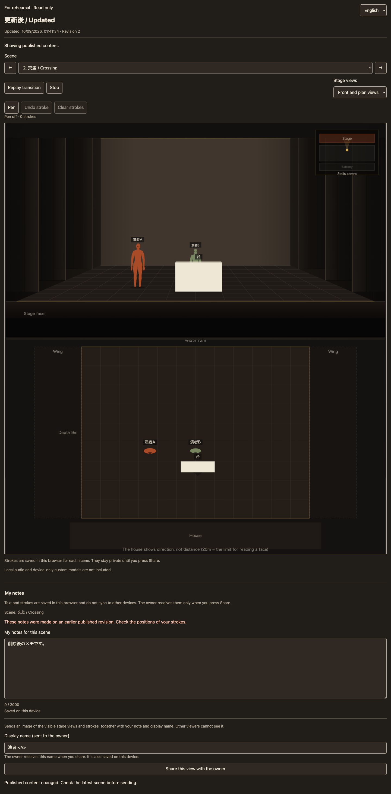
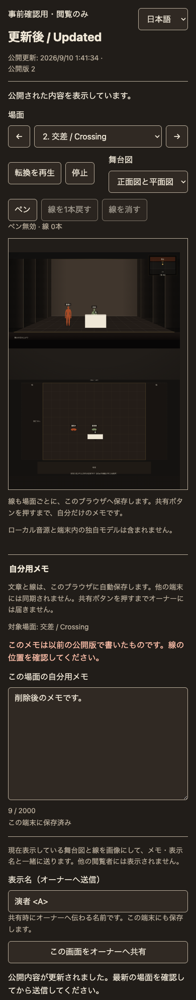
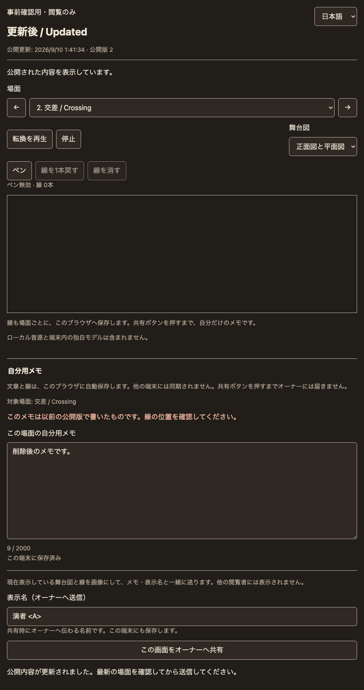
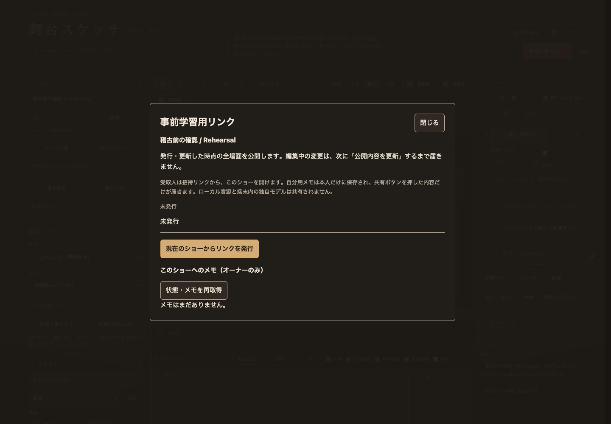
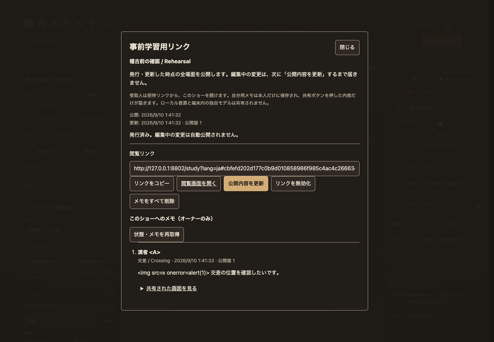
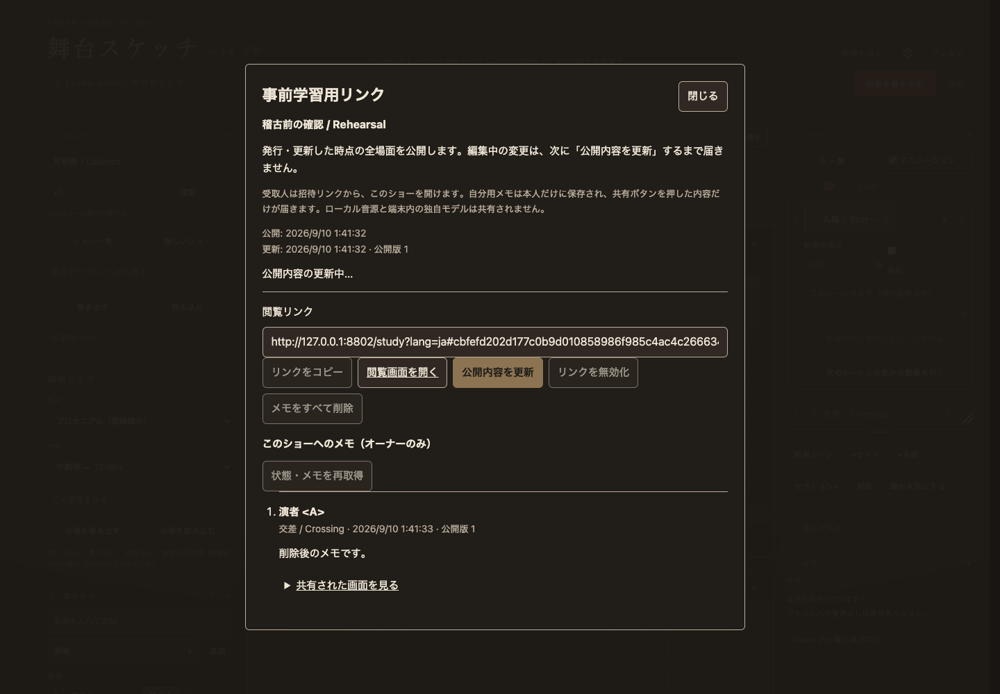
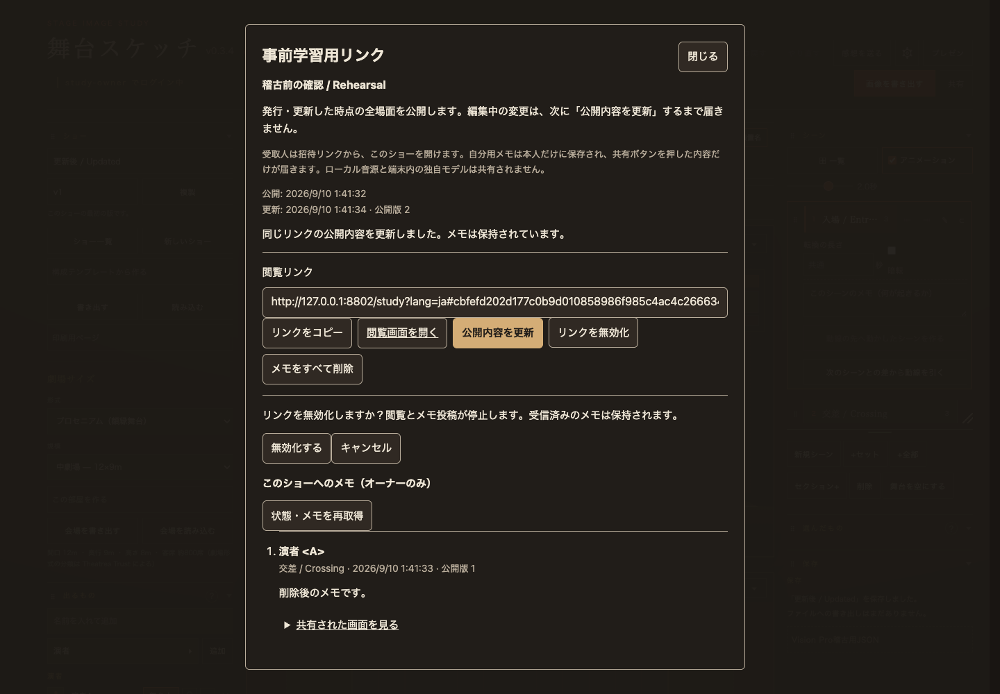
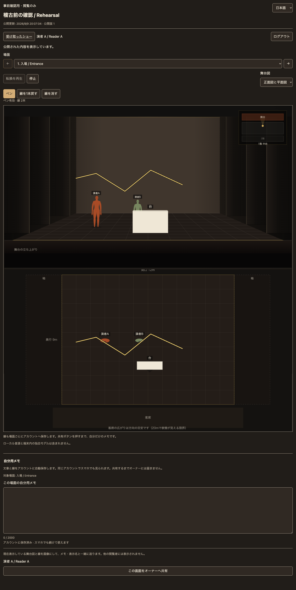

STAGE SKETCH / 2026-09-09 / ローカル実装・未デプロイ
事前に渡す、一つのショー。
発行時点の全場面を閲覧用に保存し、オーナーが「公開内容を更新」した時だけ同じリンクを更新します。受取人は舞台図の確認と場面に紐づくメモ送信を行えます。
次に確認すること：下の閲覧リンクで、場面移動、正面・平面の読みやすさ、メモの送りやすさを確認してください。合成した3場面のショーです。自分の端末の既存ショーは読み込まず、上書きしません。
このMacの 127.0.0.1:8814 で起動中。ログイン不要の閲覧リンクです。オーナー画面はローカル検証専用の ID study-owner / パスワード local-study-owner。本番アカウントではありません。
768 / 768関連 Node・Worker テスト
25 + 16 + 13実 SQLite 検証 + 画像検証 + 既存共有通信検証
日本語・英語 × 4画面幅Chrome で閲覧・操作・保存隔離を確認
実装した体験
オーナー
現在のショーから発行し、同じリンクを明示的に更新。日時の表示、コピー、無効化の画面内確認、投稿者・対象場面・投稿日時・本文を含むメモ一覧を独立したダイアログにまとめました。公開内容を更新・無効化した後も、以前のメモを確認できます。
メモと添付画像の全削除、失効後の新トークン再発行、失効済み公開データの完全削除を、取り消せない内容を示す画面内確認から実行できます。完全削除すると10ショーの保存枠が1件戻ります。
受取人
「事前確認用・閲覧のみ」と明示した専用画面。全場面の切替、正面図・平面図、既存の移動再生・停止と、現在場面へのメモ送信だけを使えます。編集画面へのリンクや保存・書き出しはありません。
認証済みなら検証済みログイン名、匿名なら初回入力した表示名を使います。端末保存は表示名と自分用の下書きのみ。他の受取人のメモは返しません。
適用範囲：本体 index.html と単独ベータ stage.html。公開体験版 try.html には管理入口を入れていません。課金、プラン制限、Googleログインは実装していません。
共有に含まれないもの：端末内の音源と、ショーJSONに含まれない独自立体モデル。オーナー画面で明示し、閲覧側もローカル音源を再生しません。図の再生は視覚的な確認用です。

デスクトップ：編集用のツールを除いた専用の閲覧画面。

390×844：日本語・縦向き。
844×390：横向きでは舞台図を並べて表示。オーナーの主要状態を見る

未発行・共有できない項目の説明

メモあり・プレーンテキスト表示

明示的な公開内容の更新

無効化の確認
その他の証拠：メモ全削除の確認 / 再発行の確認 / 完全削除の確認 / コピー成功 / コピー失敗 / 通信エラー / 無効化後 / オフライン時 / 本体・英語・縦画面
追加：正面図・平面図のペン
「ペン」を有効にすると、舞台図の上へ黄色い線を描けます。正面図と平面図を分け、場面ごとに線を保持。「線を1本戻す」と確認付きの「線を消す」を使えます。再生中は線を隠し、「停止」で再表示します。
線は受取人の下書きです。自分用の端末データとして場面ごとに保存し、メモ送信時だけ正面図・平面図のJPEGとしてオーナーへ共有します。オーナーはメモと一緒に画像を確認できます。元のショーは変更しません。
Chromeでマウス・タッチ相当入力、日英×4画面寸法、場面切替、1本戻す、消去の確認、元ショーとローカル保存の不変性を検証。実機のSafariやApple Pencilは未確認です。操作検証結果 / スマートフォン縦向き / 横向き

元のcanvasを変更せず、図の表示位置と縦横比に追従する独立した線。
追加・変更：stage-study-pen.js、stage-study-frame.js、stage-study-viewer.js、study.html、stage-study.css、build_study.py と生成物 study-frame.html、study-links.js の明示資源許可、tools/study-pen-browser-check.mjs、既存トークンシート。この追加による新しいbinding・migrationはありません。
保存と認可の境界
既存の SessionRoom とは別の StudyLinks Durable Object を追加。SQLiteバックエンドのストレージにスナップショット、所有者との対応、メモを永続化します。大きなスナップショットは分割保存し、発行・更新・投稿・無効化はトランザクションで直列化します。プロセス再起動後の復元も実Runtimeで確認しました。
APIと将来の認証接続
POST /study/api/owner/shows/:showId 発行
GET /study/api/owner/shows/:showId 自分のショーのリンク状態
GET / PUT / DELETE /study/api/owner/links/:token
GET / DELETE /study/api/owner/links/:token/notes
DELETE /study/api/owner/shows/:showId 失効済み保存データの完全削除
GET /study/api/view/:token 公開スナップショット
GET /study/api/view/:token/status 公開revision・日時
POST /study/api/view/:token/notes オーナー宛てメモ
将来ログインを変更するときは、検証済み利用者から不変のsubjectを返すadapterに置き換えます。現在の account:利用者ID との対応を移行する必要があります。現状はアカウント名の変更や再利用を、所有権の移転として自動解釈しません。
同一ショーを再発行できるのは無効化後だけです。新しい192ビットtokenを発行し、旧スナップショット・メモ・添付画像・旧tokenレコードを同じトランザクションで削除します。
検証結果と残る実機確認
未確認：iPhone / iPad / Android実機、Safari、VoiceOver/TalkBack、ソフトウェアキーボード表示時、実際の回線切替、複雑なショーでの舞台図の読みやすさ。Chromeの画面寸法変更は、これらの実機確認を代替しません。本番の認証・DNS・Cloudflare配信は変更も検証もしていません。
ユーザー指定の16項目と検証の対応
- 現在のショーから発行：実Chromeのオーナー操作 + API。
- 作業中・保存内容の不変性：発行前後のsnapshotとlocalStorageを比較。
- 全場面の閲覧：3場面のfixtureと場面切替。
- 明示更新まで凍結：編集後の未反映、更新後の同一URL反映を確認。
- 編集不能：隔離frame、ドラッグ・Delete・Undo、編集bridge不在、直接PUT/DELETE/PATCH/POSTの拒否。
- メモ送信とオーナー一覧：実Chrome + API。
- 受取人の一覧取得拒否：匿名GETと閲覧JSONにメモがないことを確認。
- 別所有者拒否：一覧・更新・無効化をAPIと実Runtimeで検証。
- 無効・失効・総当たり形式：共通404、64候補の拒否。
- XSS・過大・型・連投：型/サイズ/保存数/レート検査、危険な文字列をHTMLにせず表示。
- ベータ認証境界：編集・棚・名簿・一般stage資源・管理APIへの匿名到達を拒否。
- 受取人の既存ショー保持：storageへsentinelを置いて閲覧・投稿・場面移動後も一致。
- 日英・主要状態：各画面幅と状態のスクリーンショット、翻訳の実装。
- 本体・ベータの資源：両入口、SW、Worker明示許可、専用ページの絶対参照をテスト。
- 生成物一致：stage.html・study-frame.htmlの生成チェック。
- 既存共有・ゲスト回帰：関連Nodeと実WebSocketテストが成功。
再開・再検証する手順
今動いている確認サーバーを使う場合は、冒頭のリンクを開くだけです。再起動時は次を実行します。インストール済みのMiniflareを使い、新しい依存や秘密情報を登録していません。
cd '/Users/arata/Library/Mobile Documents/com~apple~CloudDocs/claude code files/show-creative-ideas/shosai-app'
STUDY_PORT=8814 STUDY_PERSIST=/tmp/stage-study-fix-preview-8814 STUDY_MINIFLARE=/Users/arata/.npm/_npx/32026684e21afda6/node_modules/miniflare/dist/src/index.js node tools/study-preview.mjs
現在の検証サーバーはポート8814、保存先 /tmp/stage-study-fix-preview-8814。再起動後も残りますが、OSの一時領域清掃後の保持は保証しません。ポート変更は STUDY_PORT、保存先変更は STUDY_PERSIST。Miniflareを通常のnode_modulesに導入済みの環境では環境変数を省略できます。
- ベータ画面にローカル検証アカウントでログイン。
- 合成ショーJSONを読み込み、既存の確認画面で「別のショーとして開く」を選択。元のショーを置き換えないでください。
- ショー名付近の「事前学習用リンク」を開く。レビュー用リンクの発行済み状態と、受取人が送ったメモを確認できます。
- 場面を変更し、公開内容は変わらないことを閲覧側で確認。「公開内容を更新」して反映を確認します。
テスト再実行コマンド
node --test tests/stage-*.test.mjs tests/worker-*.test.mjs tests/usage-metrics.test.mjs tests/study-*.test.mjs
STUDY_MINIFLARE=/Users/arata/.npm/_npx/32026684e21afda6/node_modules/miniflare/dist/src/index.js node tools/study-runtime-check.mjs
STUDY_MINIFLARE=/Users/arata/.npm/_npx/32026684e21afda6/node_modules/miniflare/dist/src/index.js node tools/study-image-runtime-check.mjs
STUDY_PLAYWRIGHT=/Users/arata/.npm/_npx/9833c18b2d85bc59/node_modules/playwright/index.js node tools/study-browser-check.mjs
python3 build_stage.py --check
python3 build_public.py --check
git diff --check
Chromeテストは STUDY_BASE で指定したローカルサーバーと、一時的な独立ブラウザプロファイルを使います。実行ごとに新しい合成リンクを作り、結果は qa/result.json へ保存します。このHTML内のリンクを再利用したい場合は、テスト出力の新しいURLとfixtureに合わせてください。
本番適用に必要な作業
本番適用は実施していません。承認後、既存の別作業とまとめて差分をレビューしてから、対象Workerへ次の設定を適用する必要があります。
STUDY_LINKS → StudyLinks binding、worker.js のclass export、v3-study-links の new_sqlite_classes = ["StudyLinks"] を適用。- 既存の
SESSION_ROOM と USAGE_METRICS binding、およびv1/v2 migrationを保持。v2は着手前から存在した別作業です。本番で適用済みかは今回照会していないため、migration履歴を照合して順序を確認。 assets.run_worker_first = true を維持。生成した専用ページ・新規JS/CSSを含めて配信。本体を別Workerで運用する場合、そのWorkerにも同じAPI・binding・migrationが必要です。静的HTMLだけでは永続共有は動きません。- デプロイ後は、実アカウントA/Bの分離、匿名経路、メモ保持、無効化、実際の配信資源と生成物の一致を改めて確認。
新規の秘密情報は不要です。SQLite Durable Objectのmigration方式はCloudflare公式ドキュメントを参照。今回のローカル検証は本番migrationの適用証明ではありません。
変更ファイルと共有作業の保護
着手前の30件の追跡済み未コミット差分を保存し、編集直前にもstatus・対象diff・内容hashを確認。今回変更した追跡済み14ファイル以外に、予期しない変更はありません。対象外の既存差分18ファイルは着手時とバイト一致。対象を共有するファイルでも、以前からあった差分を残して機能を追加しています。既存の未追跡資料には触れていません。
保全検査。着手前の内容とpatchは /tmp/stage-study-baseline-20260909 に保存。commit、push、Cloudflareへのデプロイ、公開、外部送信、秘密情報の登録は行っていません。